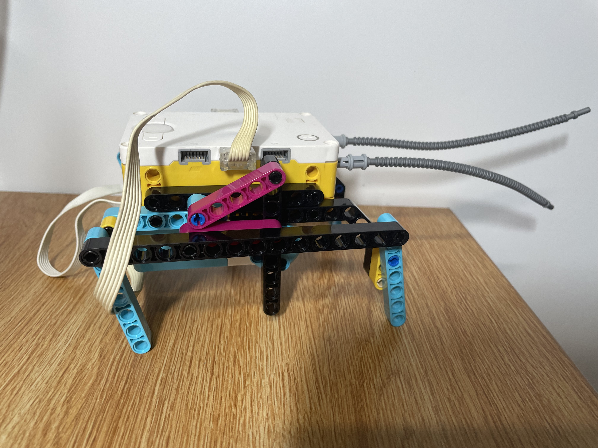
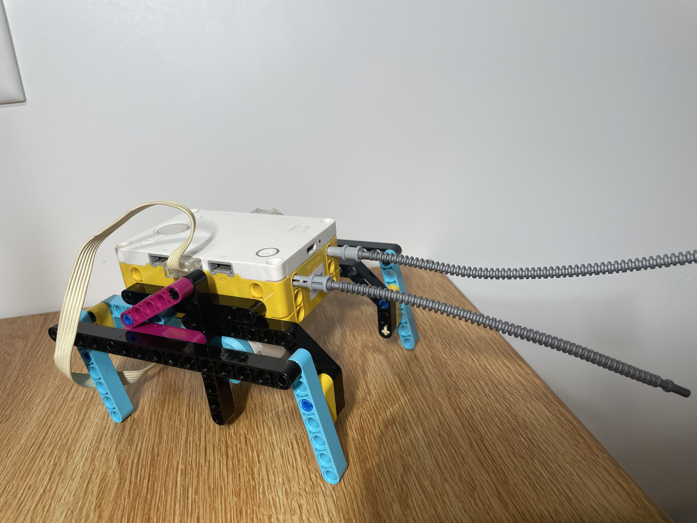
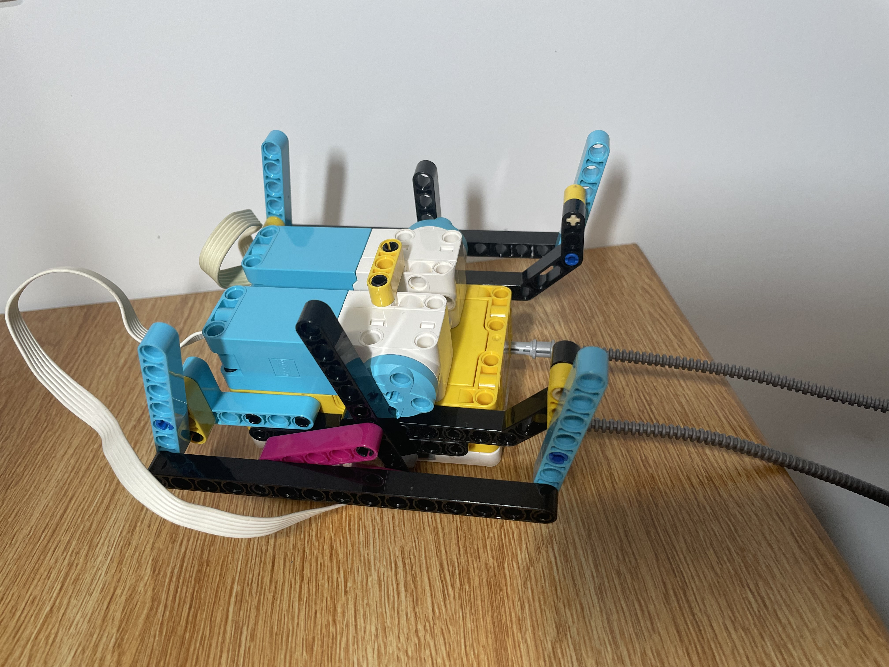

Project Portfolio

Project 3: Biomimicry
In this project, we were tasked with creating a robot that mimics a structure-function design found in nature. I decided to create a robot with a movement style similar to a stick insect. I drew inspiration from some of the videos linked below while cycling through many design iterations until I found one that worked. The hardest part of this project was making all six legs move at once while using only two motors.



Robotics Inspiration
LEGO SPIKE PRIME: Six-legged insect Six-legged robot inspiration Biomimicry robot inspiration Walking robot inspirationAnimal Reference
Animal inspiration: stick insect, from the order Phasmatodea.
Watch the stick insect reference video